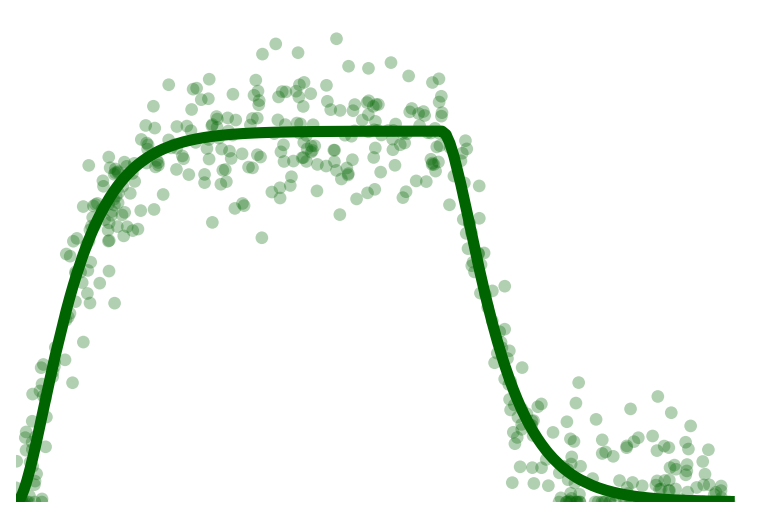
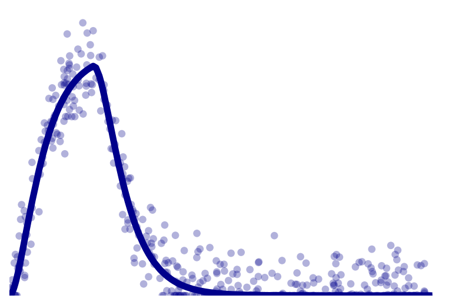

Figure 1 Analysis
import numpy as np
import matplotlib.pyplot as pl
import scvelo as scv
scv.logging.print_version()
# the main tools we will be using is scVelo, a scalable toolkit for RNA velocity analysis in single cells
# created a scvtools package for the plotting functions
from scvtools import utils
Running scvelo 0.2.4 (python 3.9.12) on 2022-05-11 21:42.
ERROR: XMLRPC request failed [code: -32500]
RuntimeError: PyPI's XMLRPC API is currently disabled due to unmanageable load and will be deprecated in the near future. See https://status.python.org/ for more information.
---------------------------------------------------------------------------
ModuleNotFoundError Traceback (most recent call last)
Input In [1], in <cell line: 10>()
5 scv.logging.print_version()
7 # the main tools we will be using is scVelo, a scalable toolkit for RNA velocity analysis in single cells
8
9 # created a scvtools package for the plotting functions
---> 10 from scvtools import utils
ModuleNotFoundError: No module named 'scvtools'
Figure 1 Analysis¶
scv.settings.set_figure_params('scvelo', dpi_save=200, dpi=80, transparent=True, format='png') # vectorized: pdf or svg
scv.settings.plot_prefix = 'scvelo_concept_'
scv.settings.verbosity = 2
kwargs = {'fontsize': 18, 'size': 200, 'linewidth': 3, 'use_raw': True,
'legend_loc': 'none', 'colorbar': False, 'frameon': False, 'title': ''}
Analysis
RNA velocity posits a model of transcriptional dynamics For each gene, there is a given transcription rate, splicing rate (beta), and degradation rate (gamma)
Simulated mRNA metabolism with transcription, splicing and degradation. The parameters for each reaction are randomly sampled from a log-normal distribution and time events follow the Poisson law. The total time spent in a transcriptional state is varied between two and ten hours.
adata = scv.datasets.simulation(n_obs=500, t_max=25, beta=.3, gamma=.15,
switches=[.5, .4, .3, .2], noise_level=1)
scv.tl.velocity(adata, mode='steady_state', vkey='steady_state_velocity', use_raw=True)
computing velocities
WARNING: You seem to have very low signal in splicing dynamics.
The correlation threshold has been reduced to -0.3586.
Please be cautious when interpreting results.
WARNING: Too few genes are selected as velocity genes. Consider setting a lower threshold for min_r2 or min_likelihood.
finished (0:00:00)
Note
The docs are not entirely clear re: the implications of “switches” and “noise_level” in the above simulation function
basis = adata.var_names[1]
scv.tl.velocity(adata, mode='steady_state', vkey='steady_state_velocity', use_raw=True)
dm = scv.tl.recover_dynamics(adata, var_names=basis, use_raw=True, max_iter=100)
computing velocities
WARNING: You seem to have very low signal in splicing dynamics.
The correlation threshold has been reduced to -0.3586.
Please be cautious when interpreting results.
WARNING: Too few genes are selected as velocity genes. Consider setting a lower threshold for min_r2 or min_likelihood.
finished (0:00:00)
recovering dynamics (using 1/8 cores)
finished (0:00:00)
outputs model fit of gene: 1
adata.obs['ss_weights'] = scv.utils.get_weight(adata[:, basis].layers['spliced'],
adata[:, basis].layers['unspliced'], perc=[10, 90]) * 1.01
scv.pl.scatter(adata, basis=basis, vkey='steady_state_velocity', color='ss_weights',
color_map='twilight_shifted', vmin=-0.5, vmax=0.4, **kwargs, save='1')
scv.pl.scatter(adata, basis=basis, vkey='dynamics', color='fit_t', color_map='viridis_r', **kwargs, save='2')
saving figure to file ./figures/scvelo_concept_1.png
saving figure to file ./figures/scvelo_concept_2.png
v_kwargs = {'vkey': 'steady_state_velocity', 'use_raw': True}
kwargs = {'size': 1, 'frameon': False, 'legend_loc': 'none', 'title': '', 'linewidth': .25, 'colorbar': False}
scv.tl.velocity(adata, mode='steady_state', **v_kwargs)
scv.pl.velocity_embedding(adata, basis=basis, color='steady_state_velocity',
color_map='viridis', **v_kwargs, **kwargs)
dm = scv.tl.recover_dynamics(adata, var_names=basis, use_raw=True, max_iter=100)
scv.tl.velocity(adata, mode='dynamical', use_raw=True)
v_kwargs={'vkey': 'velocity', 'size': 200, 'frameon': False, 'title': '',
'legend_loc': 'none', 'linewidth': .15, 'colorbar': False}
ax = scv.pl.scatter(adata, basis=basis, vkey='dynamics', size=1, use_raw=True,
legend_loc='none', linewidth=1, show=False)
scv.pl.velocity_embedding(adata, basis=basis, color='fit_t', color_map='viridis_r',
use_raw=True, **v_kwargs, ax=ax, save='3')
computing velocities
WARNING: You seem to have very low signal in splicing dynamics.
The correlation threshold has been reduced to -0.3586.
Please be cautious when interpreting results.
WARNING: Too few genes are selected as velocity genes. Consider setting a lower threshold for min_r2 or min_likelihood.
finished (0:00:00)
recovering dynamics (using 1/8 cores)
finished (0:00:00)
outputs model fit of gene: 1
computing velocities
WARNING: Too few genes are selected as velocity genes. Consider setting a lower threshold for min_r2 or min_likelihood.
finished (0:00:00)
saving figure to file ./figures/scvelo_concept_3.png
dm = scv.tl.recover_dynamics(adata, var_names=basis, max_iter=2, use_raw=True)
kwargs = {'fontsize': 18, 'size': 200, 'linewidth': 3, 'use_raw': True,
'legend_loc': 'none', 'colorbar': False, 'frameon': False, 'title': ''}
scv.pl.scatter(adata, basis=basis, vkey='dynamics', color='fit_t', color_map='viridis_r',
show_assignments=True, **kwargs, save='5')
recovering dynamics (using 1/8 cores)
finished (0:00:00)
outputs model fit of gene: 1
saving figure to file ./figures/scvelo_concept_5.png
bdata = scv.datasets.simulation(n_obs=500, t_max=120, beta=.3, gamma=.15, switches=[.6, .2], noise_level=1)
sim_kwargs = {'ykey': 'spliced', 'linewidth': 5, 'legend_loc': 'none', 'frameon': False}
scv.pl.simulation(bdata, var_names=bdata.var_names[0], colors=['darkgreen'], **sim_kwargs)
scv.pl.simulation(bdata, var_names=bdata.var_names[1], colors=['darkblue'], **sim_kwargs)


dm = scv.tl.recover_dynamics(adata, var_names=basis, use_raw=True)
dm.plot_state_likelihoods(continuous=True)
recovering dynamics (using 1/8 cores)
finished (0:00:00)
outputs model fit of gene: 1
<AxesSubplot:xlabel='spliced', ylabel='unspliced'>